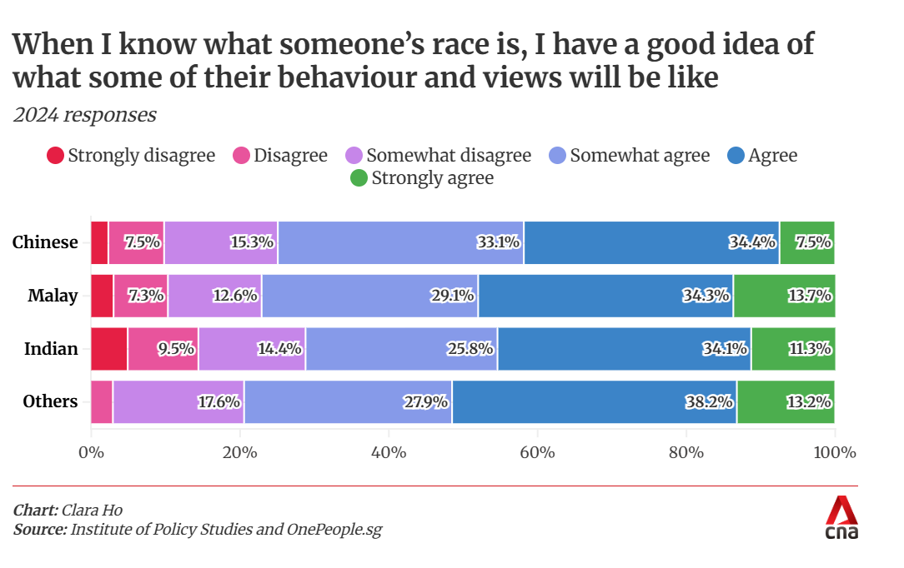
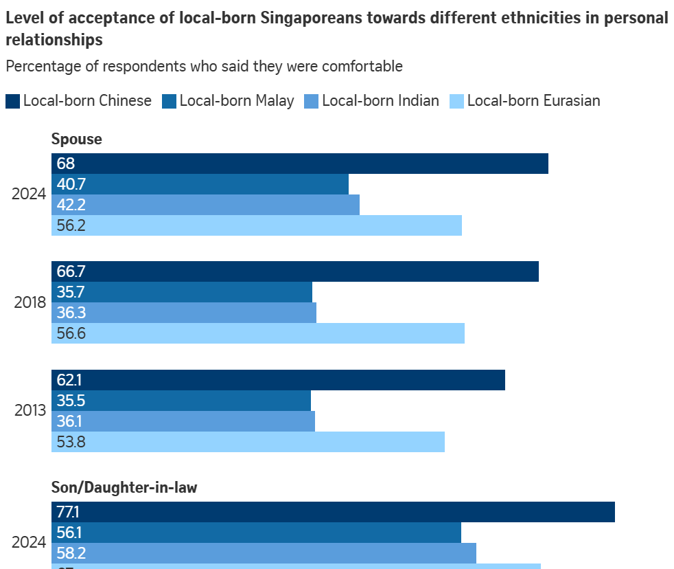
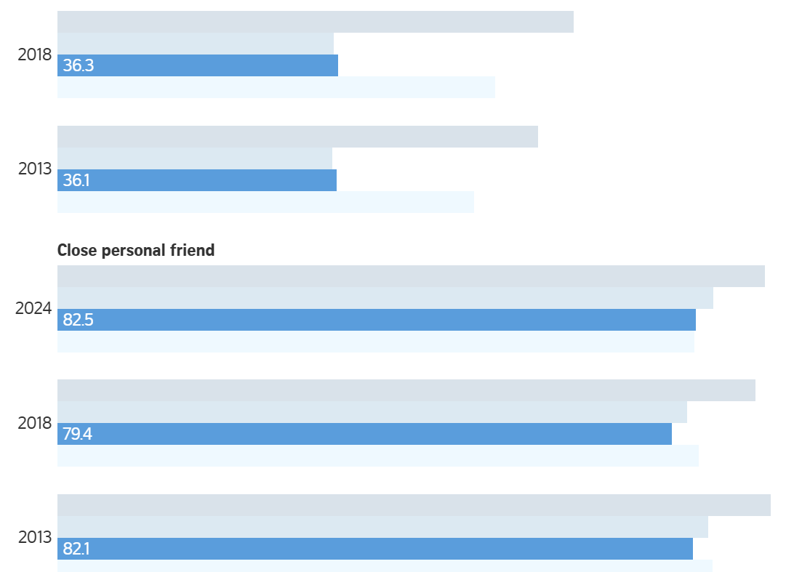

Figure 1: Racial Stereotyping Chart from CNA. Source Link
Visualisation 1: Racial Stereotyping
Data Issues
Risk of Misinterpretation - The chart could mislead readers into thinking the survey measures opinions about each race rather than opinions held by each racial group.
X-Axis Confusion - The x-axis only provides percentage markers, but seem redundant based on the way the percentages are broken down in the chart itself.
Skewed Representation - The layout makes any trend analysis difficult. It is harder to interpret patterns intuitively or accurately.
Idiom Issues
Ambiguous Wording - “I have a good idea of their behaviour” is vague and is immediately associated with stereotyping, which the chart is meant to convey.
Suggested Improvements
Title can be changed from that of the question asked to one which provides greater clarity. E.g. "How Different Racial Groups Perceive the Role of Race in Behaviour"
The X-Axis can be changed from the percentage to a title which explains that the numbers above reflect the racial group’s own beliefs. This also reduces misinterpretation.
Align agreement levels across the racial groups for easier comparison.

Figure 2: Acceptance Towards Different Groups Chart from Straits Times.

Figure 3: Screenshot of the interactive graph from Straits Times.Chart: Straits Times Graphics. Source: Institute of Policy Studies (IPS) Source Link
Visualisation 2: Acceptance Towards Different Races
Data Issues
Risk of Misinterpretation - The chart could mislead readers into thinking the survey measures opinions about each race rather than opinions held by each racial group.
Lack of X-Axis - This combined with the fact that scrolling is required makes it difficult to recall what is being visualised.
Questioning Reliability - Lack of info on relative sample sizes leads to confusion about why responses are so homogenous across racial groups and if it is due to visualisation or related to data collection / sampling.
Idiom Issues
Incomplete Context - The visualisation requires scrolling which results in the loss of the headers and the category info, which is also absent in the interactive element of the visualisation.
Suggested Improvements
Using fixed / sticky headers to not lose info when scrolling.
Take advantage of the interactive nature to ensure data isn’t lost when scrolling through labeling.
Use small multiples to better visualise the clusters alongside each other.
Label the X-axis - "Proportion of respondents from each racial group who accept different personal relationships" which also reduces confusion.
Provide sample size and note on if weighting was applied to match the racial proportions of Singapore.